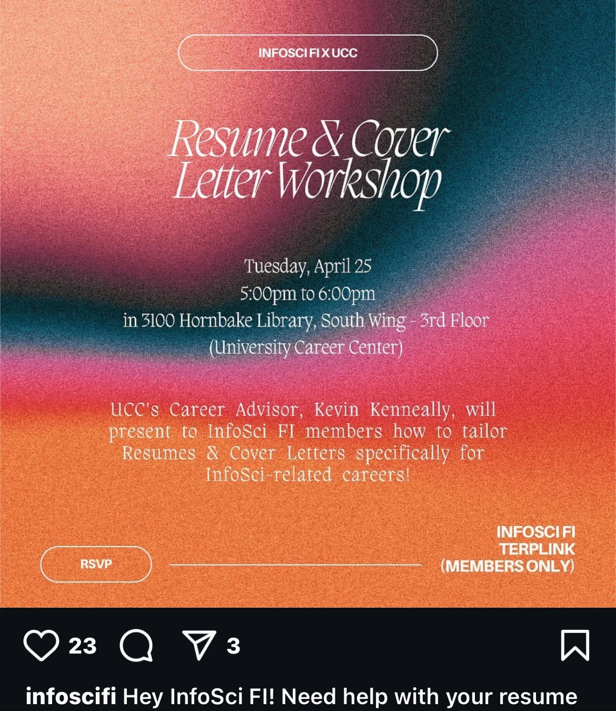
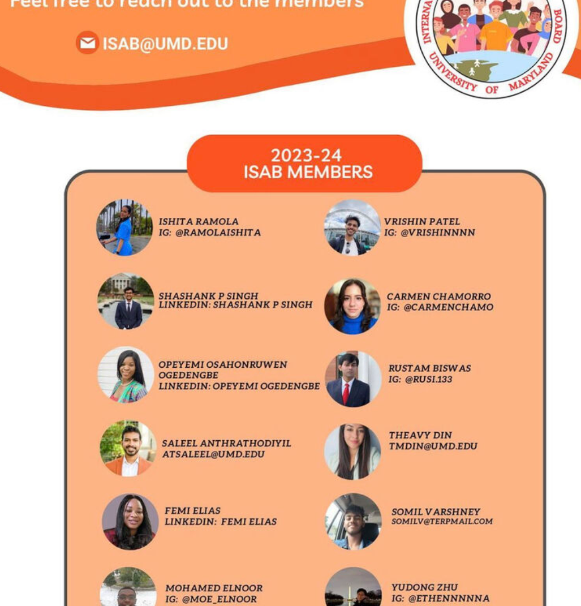
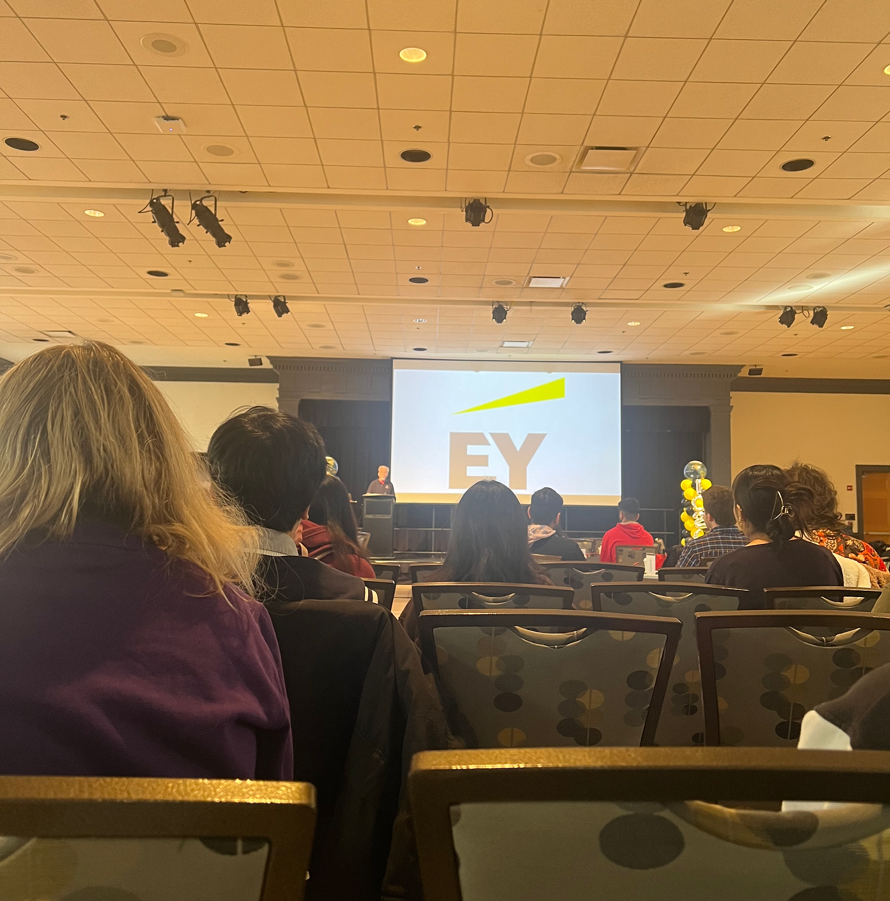
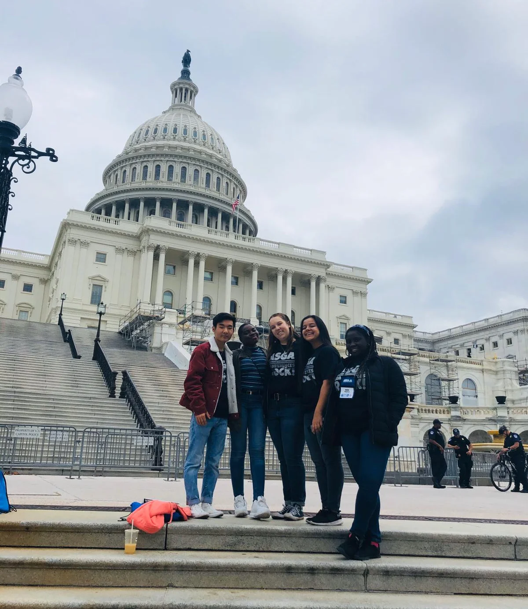
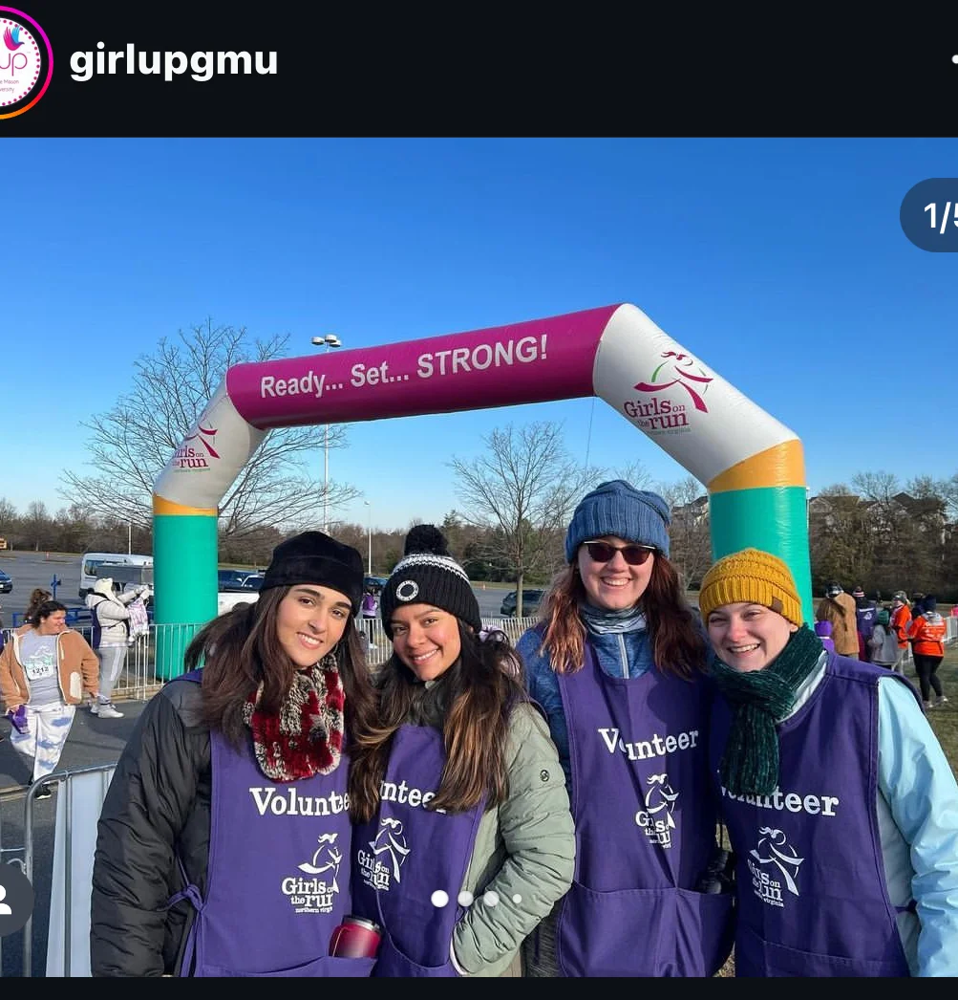

Community Involvement
InfoSci FI - Event Planner
InfoSci FI is committed to pioneering the first student organization in Informational Science at UMD dedicated to expanding opportunities for female-identifying students. These opportunities include cultivating a professional presence, offering volunteer experiences, and fostering a supportive atmosphere for female-identifying students embarking on technology careers.
As an event planner, I have orchestrated workshops and events aimed at fostering personal, academic, and professional growth within a supportive environment. From resume workshops to recruitment events, I aim to empower female-identifying students in their technology careers.
International Student Advisory Board - Board Member
ISAB is a group of student representatives on a mission to amplify the voices of our international student community. We strive to foster an inclusive campus environment, address challenges, and create innovative solutions to enhance the college experience for all international students.
I'm passionate about promoting cross-cultural understanding and advocating for the needs of international students to create a welcoming campus environment for all. Together, we can make a meaningful difference.
Info Challenge - Participant
As a participant in the annual week-long Info Challenge, hosted by the UMD College of Information Studies, I engaged in solving real-world problems in data analytics, security, and design. This event brought together students from various institutions, and we collaborated on projects provided by esteemed partner organizations like EY, Amazon Web Services, and Google.
Girl Up - Vice President
Girl Up is a leadership development initiative focused on equity for girls and women, especially in spaces where they are unheard or underrepresented. As the Vice President, I helped amplify the voices of girls and women, advocating for leadership, equity, and equality. We work to create a more inclusive and just world for everyone.

Student Senate - Senator-at-large
As a Senator-at-large, I actively engaged in advocating for student concerns to the college administration and state legislators. I pushed for policy reviews aimed at enhancing student success, including organizing advocacy forums to foster community engagement around important social issues.
Girls on the Run - Volunteer
As a volunteer for Girls on the Run, I dedicated my time to supporting and empowering young girls in their physical, emotional, and social development. My involvement helped foster self-esteem and leadership skills in the girls, promoting resilience and confidence through the program.
Call: +1 240-899-7538